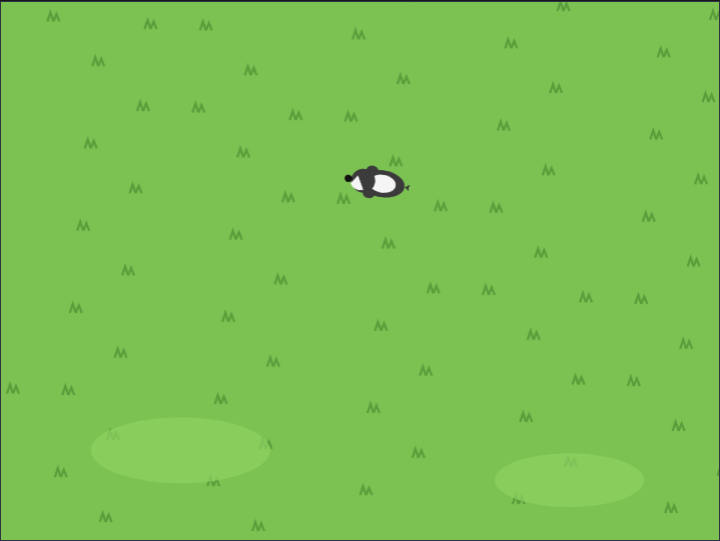
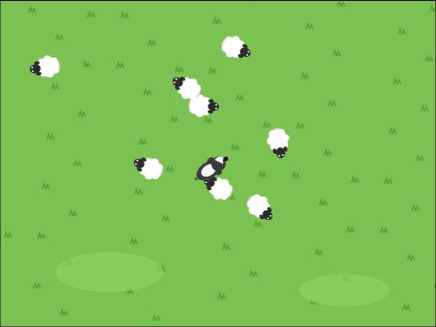
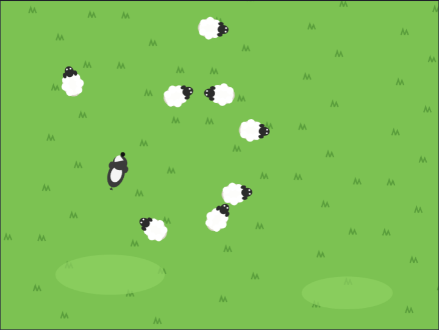

<title>Sheepdog Tutorial</title>
<meta name="claude:viewport-fit-sides" content="cover">
<link rel="preconnect" href="https://fonts.googleapis.com">
<link rel="stylesheet" href="https://fonts.googleapis.com/css2?family=Fredoka:wght@500;600&family=Atkinson+Hyperlegible:ital,wght@0,400;0,700;1,400&family=JetBrains+Mono:wght@400&display=swap">
<style>
/* Layout: one reading column; each step is a numbered section: the big idea, the blocks, a picture and a checkpoint file. */
:root {
  --bg: #f4f3fa; --surface: #ffffff; --fg: #1f1d33; --muted: #5c5a74; --line: #dddbea;
  --accent: #2f7d32; --accent-soft: #e3f3df; --drone: #b45309; --code-bg: #f8f7fd;
  --display: "Fredoka", "Trebuchet MS", system-ui, sans-serif;
  --body: "Atkinson Hyperlegible", "Segoe UI", system-ui, sans-serif;
  --mono: "JetBrains Mono", ui-monospace, Consolas, monospace;
}
@media (prefers-color-scheme: dark) { :root:not([data-theme="light"]) {
  --bg: #13121f; --surface: #1c1a2c; --fg: #ebe9f7; --muted: #a6a3bf; --line: #312e47;
  --accent: #8fd88f; --accent-soft: #1f3320; --drone: #f2a065; --code-bg: #232036; color-scheme: dark; } }
:root[data-theme="dark"] {
  --bg: #13121f; --surface: #1c1a2c; --fg: #ebe9f7; --muted: #a6a3bf; --line: #312e47;
  --accent: #8fd88f; --accent-soft: #1f3320; --drone: #f2a065; --code-bg: #232036; color-scheme: dark; }

body { background: var(--bg); color: var(--fg); font: 18px/1.6 var(--body);
  padding-left: max(16px, env(safe-area-inset-left, 0px)); padding-right: max(16px, env(safe-area-inset-right, 0px)); padding-block: 40px 72px; }
main { max-width: 760px; margin: 0 auto; display: grid; gap: 48px; }
main > *, .step > *, .stack > *, .intro > * { min-width: 0; }
h1, h2, h3 { font-family: var(--display); font-weight: 600; text-wrap: balance; margin: 0; line-height: 1.15; }
h1 { font-size: clamp(2rem, 6vw, 2.9rem); }
h2 { font-size: 1.7rem; }
h3 { font-size: 1.15rem; font-weight: 500; }
p { margin: 0; max-width: 66ch; }
a { color: var(--accent); }
code { font: 0.88em var(--mono); background: var(--code-bg); padding: 1px 5px; border-radius: 4px; overflow-wrap: anywhere; }
.eyebrow { font: 600 0.78rem var(--body); letter-spacing: 0.08em; text-transform: uppercase; color: var(--drone); }
.stack { display: grid; gap: 16px; min-width: 0; }
.intro { display: grid; gap: 14px; }
.intro p { color: var(--muted); font-size: 1.08rem; }

.plan { list-style: none; margin: 0; padding: 0; display: grid; gap: 6px; counter-reset: plan; }
.plan li { display: flex; flex-wrap: wrap; align-items: baseline; gap: 4px 12px; padding: 8px 12px; border-radius: 6px; counter-increment: plan; }
.plan li::before { content: counter(plan); font: 600 0.95rem var(--display); color: var(--muted); width: 1.4em; }
.plan .name { font-weight: 700; }
.plan a { text-decoration: none; }
.plan a:hover .name, .plan a:focus-visible .name { text-decoration: underline; }
.plan .what { color: var(--muted); flex: 1 1 220px; }

.step { display: grid; gap: 20px; border-top: 2px solid var(--line); padding-top: 32px; }
.step-head { display: flex; align-items: center; gap: 14px; }
.num { flex: none; width: 44px; height: 44px; border-radius: 50%; display: grid; place-items: center;
  background: var(--accent); color: var(--surface); font: 600 1.3rem var(--display); }
ol.do { margin: 0; padding-left: 1.3em; display: grid; gap: 8px; max-width: 66ch; }

.blocks-panel { background: var(--surface); border: 1px solid var(--line); border-radius: 8px; padding: 16px; overflow-x: auto; }
.blocks-panel .label { font: 700 0.78rem var(--body); letter-spacing: 0.06em; text-transform: uppercase; color: var(--muted); margin-bottom: 8px; }
pre.blocks { margin: 0; font: 13px var(--mono); white-space: pre; }

.note { border-left: 3px solid var(--drone); padding: 2px 0 2px 14px; color: var(--fg); }
.note b { color: var(--drone); }
figure { margin: 0; display: grid; gap: 8px; }
figure img { width: 100%; border-radius: 8px; border: 1px solid var(--line); display: block; }
figcaption { font-size: 0.9rem; color: var(--muted); }

.table-wrap { overflow-x: auto; }
table { border-collapse: collapse; font-variant-numeric: tabular-nums; min-width: 420px; }
th, td { text-align: right; padding: 6px 14px; border-bottom: 1px solid var(--line); }
th:first-child, td:first-child { text-align: left; }
th { font-size: 0.82rem; color: var(--muted); font-weight: 700; }

.checkpoint { display: flex; flex-wrap: wrap; align-items: center; gap: 10px 16px; background: var(--surface);
  border: 1px solid var(--line); border-radius: 8px; padding: 12px 16px; }
.checkpoint p { flex: 1 1 260px; color: var(--muted); font-size: 0.95rem; }
.btn { display: inline-block; font-weight: 700; text-decoration: none; color: var(--surface); background: var(--accent);
  padding: 8px 16px; border-radius: 6px; white-space: nowrap; }
.btn:hover, .btn:focus-visible { outline: 3px solid var(--accent-soft); outline-offset: 1px; }
.try { margin: 0; padding-left: 1.3em; display: grid; gap: 6px; }
svg.coords text { font: 11px var(--body); fill: var(--muted); }
.scripts { display: flex; flex-wrap: wrap; gap: 12px; align-items: flex-start; }
.scripts .blocks-panel { flex: 0 1 auto; max-width: 100%; min-width: 0; }
.tag { font-size: 0.7rem; font-weight: 700; letter-spacing: 0.04em; padding: 1px 7px; border-radius: 999px; margin-left: 6px; }
.tag.new { background: var(--accent); color: var(--surface); }
.tag.changed { border: 1px solid var(--drone); color: var(--drone); }
.flow { list-style: none; margin: 0; padding: 0; display: flex; flex-wrap: wrap; gap: 8px; counter-reset: none; }
.flow li { display: grid; gap: 2px; padding: 10px 14px; border-radius: 8px; background: var(--surface); border: 1px solid var(--line);
  flex: 1 1 130px; min-width: 0; position: relative; }
.flow li b { font: 600 1.05rem var(--display); color: var(--accent); }
.flow li span { font-size: 0.85rem; color: var(--muted); }
footer { color: var(--muted); font-size: 0.92rem; border-top: 2px solid var(--line); padding-top: 24px; }
.idea { background: var(--accent-soft); border-radius: 8px; padding: 12px 16px; display: grid; gap: 4px; max-width: 66ch; }
.make { display: grid; gap: 4px; max-width: 66ch; font-size: 0.95rem; }
.make b { color: var(--drone); }
.idea b { font: 600 1rem var(--display); color: var(--accent); }
</style>

<main>
  <header class="intro">
    <span class="eyebrow">Scratch tutorial for kids (8+) · 4 short steps · basic blocks only</span>
    <h1>Sheepdog</h1>
    <p>You are the dog. The sheep are scared of you, so wherever you run, they run the other way. Use that to herd all eight into the pen, as fast as you can. The whole game is 28 lines of blocks.</p>
    <p>Every step is a game you can play, and every step has a file you can download if you get stuck. You need the Scratch editor: <a href="https://scratch.mit.edu/projects/editor/">scratch.mit.edu/projects/editor</a>.</p>
    <div class="checkpoint">
      <p>Start here: the starter project has the dog, a sheep, the pen and the meadow. No code yet.</p>
      <a class="btn" href="https://github.com/AJosephsen/MyTemporaryJunk/raw/main/scratch/tutorials/sheepdog/starter.sb3">Download starter.sb3</a>
    </div>
  </header>

  <section class="stack" aria-label="Steps">
    <h3>The steps</h3>
    <ol class="plan">
      <li><a href="#step-1"><span class="name">The dog follows the mouse</span></a><span class="what">Point towards, then move</span></li>
      <li><a href="#step-2"><span class="name">The sheep graze</span></a><span class="what">Random wandering</span></li>
      <li><a href="#step-3"><span class="name">The sheep run from the dog</span></a><span class="what">Run away = point towards, turn 180</span></li>
      <li><a href="#step-4"><span class="name">The pen and the clock</span></a><span class="what">A loop that ends</span></li>
    </ol>
  </section>

  <section class="step" id="step-1">
    <div class="step-head"><span class="num">1</span><h2>The dog follows the mouse</h2></div>
    <div class="idea"><b>Big idea: point towards, then move</b><span>Two blocks make a sprite chase something: <b>point towards (mouse-pointer)</b> and <b>move 4 steps</b>. Put them in a <b>forever</b> loop and the dog runs to wherever your mouse is.</span></div>
    <p class="make"><span><b>Make:</b> nothing new yet. The starter has the Dog, the Sheep and the Pen, and the meadow.</span></p>
    <div class="scripts">
<div class="blocks-panel"><div class="label">Dog <span class="tag new">new</span></div>
<pre class="blocks">when flag clicked
go to x: (-180) y: (-120)
forever
  if &lt;(distance to (mouse-pointer v)) &gt; (10)&gt; then
    point towards (mouse-pointer v)
    move (4) steps
  end
end</pre></div>
</div>
    <ul class="do">
      <li><b>distance to (mouse-pointer) &gt; 10</b> stops the dog when it has arrived. Without it, the dog overshoots and shakes under the pointer. Take the <b>if</b> away and watch!</li>
      <li>The dog costume is drawn from above with its nose to the right, because direction 90 means right.</li>
    </ul>
    <figure>
      
      <figcaption>Move the mouse: the dog follows.</figcaption>
    </figure>
    <div class="checkpoint">
      <p>Stuck? This is the project at the end of step 1.</p>
      <a class="btn" href="https://github.com/AJosephsen/MyTemporaryJunk/raw/main/scratch/tutorials/sheepdog/step1.sb3">Download step1.sb3</a>
    </div>
  </section>

  <section class="step" id="step-2">
    <div class="step-head"><span class="num">2</span><h2>The sheep graze</h2></div>
    <div class="idea"><b>Big idea: random wandering</b><span>The Sheep sprite hides and makes 8 clones on the left of the field. Each clone wanders: <b>turn pick random −15 to 15</b>, <b>move 1 step</b>, <b>if on edge, bounce</b>. A small random turn every frame gives a wobbly, sheep-like walk.</span></div>
    <p class="make"><span><b>Make:</b> nothing new. (The sprite you see in the editor is the original; it hides when the game starts.)</span></p>
    <div class="scripts">
<div class="blocks-panel"><div class="label">Sheep <span class="tag new">new</span></div>
<pre class="blocks">when flag clicked
hide
repeat (8)
  go to x: (pick random (-200) to (-20)) y: (pick random (-150) to (150))
  create clone of (myself v)
end</pre></div>
<div class="blocks-panel"><div class="label">Sheep <span class="tag new">new</span></div>
<pre class="blocks">when I start as a clone
show
forever
  turn right (pick random (-15) to (15)) degrees
  move (1) steps
  if on edge, bounce
end</pre></div>
</div>
    <ul class="do">
      <li>Try <b>pick random −60 to 60</b>: nervous sheep. Try <b>move 3</b>: a stampede.</li>
      <li><b>if on edge, bounce</b> turns a sheep around at the edge, so the flock stays on the field.</li>
    </ul>
    <figure>
      
      <figcaption>The flock, grazing.</figcaption>
    </figure>
    <div class="checkpoint">
      <p>Stuck? This is the project at the end of step 2.</p>
      <a class="btn" href="https://github.com/AJosephsen/MyTemporaryJunk/raw/main/scratch/tutorials/sheepdog/step2.sb3">Download step2.sb3</a>
    </div>
  </section>

  <section class="step" id="step-3">
    <div class="step-head"><span class="num">3</span><h2>The sheep run from the dog</h2></div>
    <div class="idea"><b>Big idea: run away = point towards, turn 180</b><span>A sheep that sees the dog nearby runs away from it. Running away is just chasing backwards: <b>point towards (Dog)</b>, then <b>turn 180 degrees</b>, then <b>move 3 steps</b>.</span></div>
    <p class="make"><span><b>Make:</b> nothing new.</span></p>
    <div class="scripts">
<div class="blocks-panel"><div class="label">Sheep <span class="tag changed">changed</span></div>
<pre class="blocks">when I start as a clone
show
forever
  turn right (pick random (-15) to (15)) degrees
  move (1) steps
  if on edge, bounce
  if &lt;(distance to (Dog v)) &lt; (70)&gt; then
    point towards (Dog v)
    turn right (180) degrees
    move (3) steps
  end
end</pre></div>
</div>
    <ul class="do">
      <li><b>distance to (Dog) &lt; 70</b> is how far a sheep can see. Bigger numbers make the flock jumpy; smaller makes them brave.</li>
      <li>The sheep is faster than its grazing walk (3 steps) but slower than the dog (4 steps), so the dog can always catch up.</li>
      <li>This works because the Dog is one sprite. A sheep can't point towards another sheep's clone, so keep it to one dog!</li>
    </ul>
    <figure>
      
      <figcaption>Scatter!</figcaption>
    </figure>
    <div class="checkpoint">
      <p>Stuck? This is the project at the end of step 3.</p>
      <a class="btn" href="https://github.com/AJosephsen/MyTemporaryJunk/raw/main/scratch/tutorials/sheepdog/step3.sb3">Download step3.sb3</a>
    </div>
  </section>

  <section class="step" id="step-4">
    <div class="step-head"><span class="num">4</span><h2>The pen and the clock</h2></div>
    <div class="idea"><b>Big idea: a loop that ends</b><span>The sheep's <b>forever</b> becomes <b>repeat until touching Pen</b>. A sheep that touches the pen stops for good and adds 1 to <b>inside</b>. When all eight are inside, the dog says well done, and the <b>timer</b> is your score.</span></div>
    <p class="make"><span><b>Make:</b> variables <code>inside</code> and <code>time</code>. Show the Pen sprite (it is hidden in the starter).</span></p>
    <div class="scripts">
<div class="blocks-panel"><div class="label">Dog <span class="tag changed">changed</span></div>
<pre class="blocks">when flag clicked
go to x: (-180) y: (-120)
set [inside v] to (0)
reset timer
forever
  if &lt;(distance to (mouse-pointer v)) &gt; (10)&gt; then
    point towards (mouse-pointer v)
    move (4) steps
  end
  set [time v] to (round (timer))
  if &lt;(inside) = (8)&gt; then
    say (join [Well done! ] (join (time) [ seconds])) for (3) seconds
    stop [all v]
  end
end</pre></div>
<div class="blocks-panel"><div class="label">Sheep <span class="tag changed">changed</span></div>
<pre class="blocks">when I start as a clone
show
repeat until &lt;touching (Pen v)?&gt;
  turn right (pick random (-15) to (15)) degrees
  move (1) steps
  if on edge, bounce
  if &lt;(distance to (Dog v)) &lt; (70)&gt; then
    point towards (Dog v)
    turn right (180) degrees
    move (3) steps
  end
end
change [inside v] by (1)</pre></div>
</div>
    <ul class="do">
      <li><b>reset timer</b> at the start; <b>time</b> is <b>round (timer)</b>, so you can see whole seconds.</li>
      <li><b>say … for 3 seconds</b> comes before <b>stop all</b>: stop all also clears speech bubbles.</li>
      <li>This is the whole game: 28 lines of blocks. Herd them in from the open side on the left!</li>
    </ul>
    <figure>
      
      <figcaption>Drive the sheep into the pen through the open side.</figcaption>
    </figure>
    <div class="checkpoint">
      <p>Stuck? This is the project at the end of step 4.</p>
      <a class="btn" href="https://github.com/AJosephsen/MyTemporaryJunk/raw/main/scratch/tutorials/sheepdog/step4.sb3">Download step4.sb3</a>
    </div>
  </section>

  <section class="stack">
    <h3>Make it your own</h3>
    <ul class="try">
      <li>A wolf: a second sprite that wanders; a sheep <b>touching Wolf</b> jumps away with <b>move 20</b>.</li>
      <li>Two dogs for two players: the second one follows the arrow keys with <b>point in direction</b> and <b>move</b>.</li>
      <li>A black sheep that is extra scared: <b>distance to Dog &lt; 120</b>.</li>
      <li>Keep the best time: a variable <b>best</b> that you only change when <b>time</b> is smaller.</li>
    </ul>
  </section>

  <footer>Made with the Scratch workbench in this repository. The blocks on this page are drawn from the real project files, so they always match the downloads; the last step is the finished game.</footer>
</main>

<script src="https://cdn.jsdelivr.net/npm/scratchblocks@3.6.4/build/scratchblocks.min.js"></script>
<script>
  scratchblocks.renderMatching("pre.blocks", { style: "scratch3", languages: ["en"], scale: 0.75 });
</script>
